Change analysis for Slovenia for PRIMAP-hist v2.7_final compared to
v2.6.1_final
Overview over
emissions by sector and gas
The following figures show the aggregate national total emissions
excluding LULUCF AR6GWP100 for the country reported priority scenario.
The dotted linesshow the v2.6.1_final data.
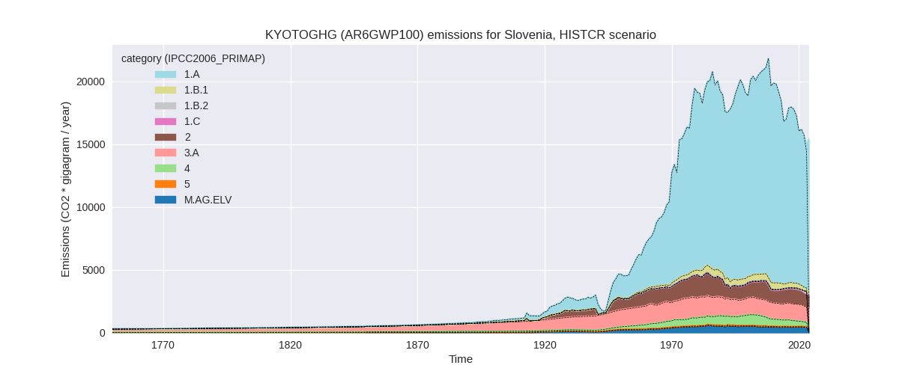
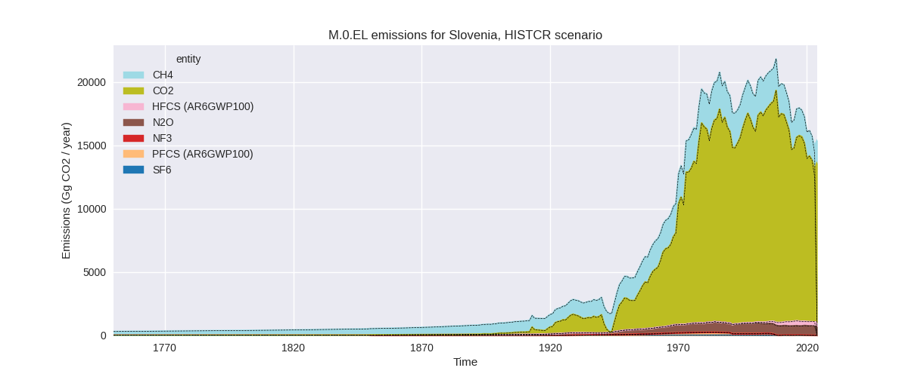
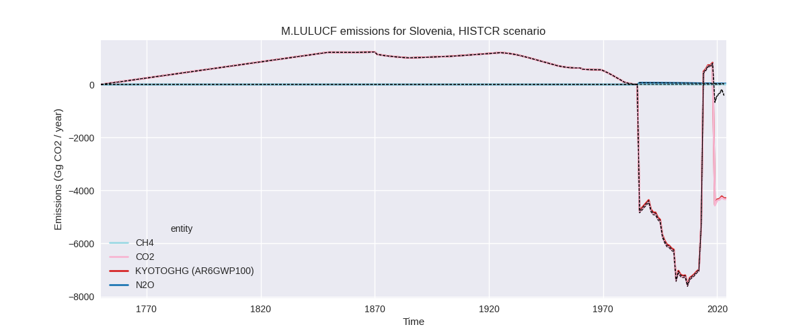
The following figures show the aggregate national total emissions
excluding LULUCF AR6GWP100 for the third party priority scenario. The
dotted linesshow the v2.6.1_final data.
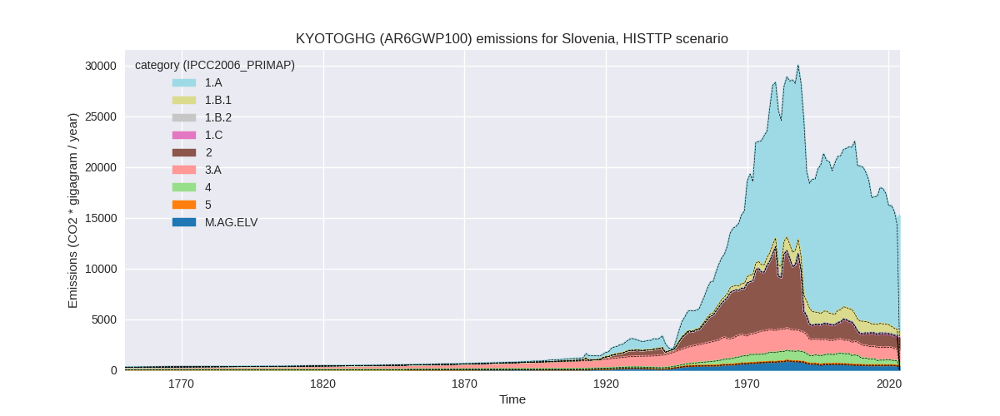
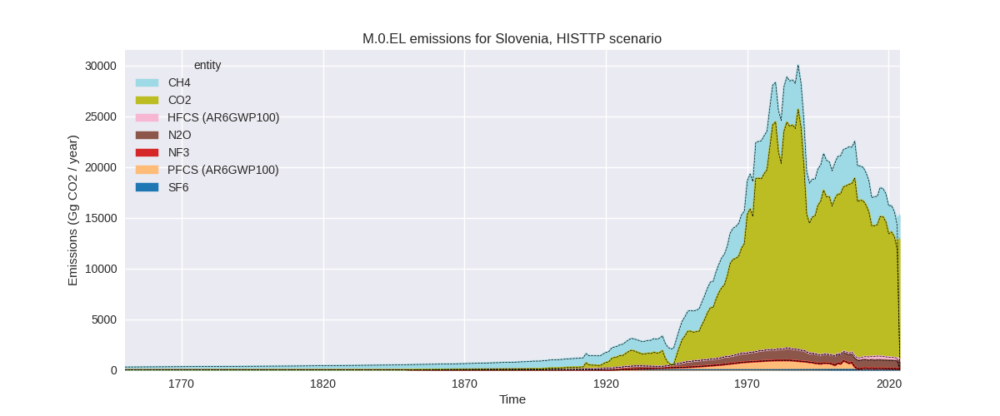
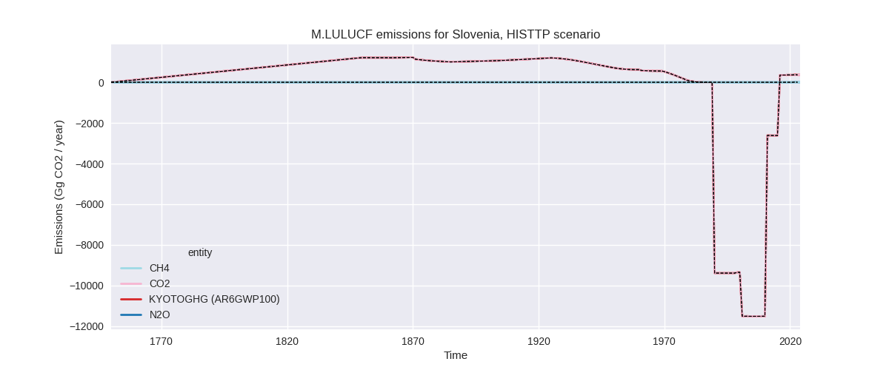
Overview over changes
In the country reported priority scenario we have the following
changes for aggregate Kyoto GHG and national total emissions excluding
LULUCF (M.0.EL):
- Emissions in 2023 have changed by 3.6%% (517.91 Gg CO2 / year)
- Emissions in 1990-2023 have changed by 0.1%% (12.31 Gg CO2 / year)
In the third party priority scenario we have the following changes
for aggregate Kyoto GHG and national total emissions excluding LULUCF
(M.0.EL):
- Emissions in 2023 have changed by 3.6%% (516.17 Gg CO2 / year)
- Emissions in 1990-2023 have changed by 0.1%% (15.63 Gg CO2 / year)
Most
important changes per scenario and time frame
In the country reported priority scenario the
following sector-gas combinations have the highest absolute impact on
national total KyotoGHG (AR6GWP100) emissions in 2023
(top 5):
- 1: 1.A, CO2 with 634.17 Gg CO2 / year (6.0%)
- 2: 2, CO2 with -92.90 Gg CO2 / year (-12.7%)
- 3: 3.A, CH4 with -55.70 Gg CO2 / year (-4.6%)
- 4: 2, N2O with -46.84 Gg CO2 / year (-46.9%)
- 5: 1.B.1, CH4 with 30.98 Gg CO2 / year (18.8%)
In the country reported priority scenario the
following sector-gas combinations have the highest absolute impact on
national total KyotoGHG (AR6GWP100) emissions in
1990-2023 (top 5):
- 1: 1.A, CO2 with 27.32 Gg CO2 / year (0.2%)
- 2: 3.A, CH4 with -19.05 Gg CO2 / year (-1.5%)
- 3: M.AG.ELV, N2O with 10.33 Gg CO2 / year (2.4%)
- 4: 3.A, N2O with -4.39 Gg CO2 / year (-10.3%)
- 5: 2, N2O with -2.82 Gg CO2 / year (-7.9%)
In the third party priority scenario the following
sector-gas combinations have the highest absolute impact on national
total KyotoGHG (AR6GWP100) emissions in 2023 (top
5):
- 1: 1.A, CO2 with 516.17 Gg CO2 / year (5.2%)
- 2: 1.A, CH4 with 0.00 Gg CO2 / year (0.0%)
- 3: M.AG.ELV, CO2 with 0.00 Gg CO2 / year (0.0%)
- 4: 2, PFCS (AR6GWP100) with 0.00 Gg CO2 / year (0.0%)
- 5: M.AG.ELV, N2O with 0.00 Gg CO2 / year (0.0%)
In the third party priority scenario the following
sector-gas combinations have the highest absolute impact on national
total KyotoGHG (AR6GWP100) emissions in 1990-2023 (top
5):
- 1: 1.A, CO2 with 15.63 Gg CO2 / year (0.1%)
- 2: 1.A, CH4 with 0.00 Gg CO2 / year (0.0%)
- 3: M.AG.ELV, CO2 with 0.00 Gg CO2 / year (0.0%)
- 4: 2, PFCS (AR6GWP100) with 0.00 Gg CO2 / year (0.0%)
- 5: M.AG.ELV, N2O with 0.00 Gg CO2 / year (0.0%)
Notes on data changes
Here we list notes explaining important emissions changes for the
country.
- Data from BTR1 has been replaced by data from the 2025 National
Inventory Submission. This leads to changes in several sectors and gases
for 2023. for cumulative emissions the changes are small in terms of
total emissions.
- The main change for 2023 is a 6% increase in energy CO2 emissions
where 2023 growth rates in the CR data are higher than the growth rates
in EI 2024 used for extrapolation in PRIMAP-hist v2.6.1.
- CO2 is lower in the IPPU sector as emissions have dropped in 2023
for many subsectors which is not the case in EDGAR data which was used
for extrapolation in v2.6.1. For N2O sector 2.G data has been adjusted
down for 2022 as well.
- CH4 and N2O from livestock are lower for most years with a higher
effect in recent years. The reason is a change in manure management
emissions factors.
- CH4 in 1.B.1 is higher in 2023 because in CR data emissions increase
for 2023 while in EDGAR data used for extrapolation in v2.6.1 they
decrease.
- N2O in M.AG.ELV is higher due to higher indirect emissions from
managed soils.
- Changes in the TP scenario are limited to 2023 and come from the
updated EI data for energy CO2.
Changes by sector and gas
For each scenario and time frame the changes are displayed for all
individual sectors and all individual gases. In the sector plot we use
aggregate Kyoto GHGs in AR6GWP100. In the gas plot we usenational total
emissions without LULUCF.
country reported scenario
2023
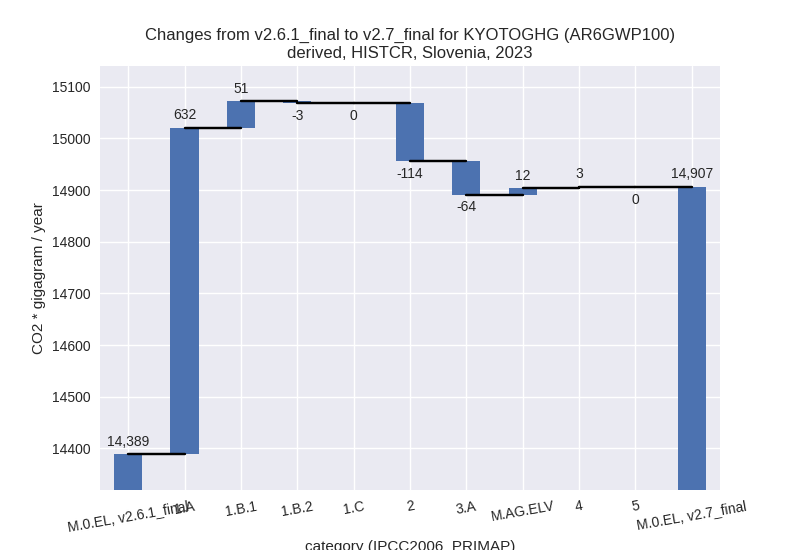
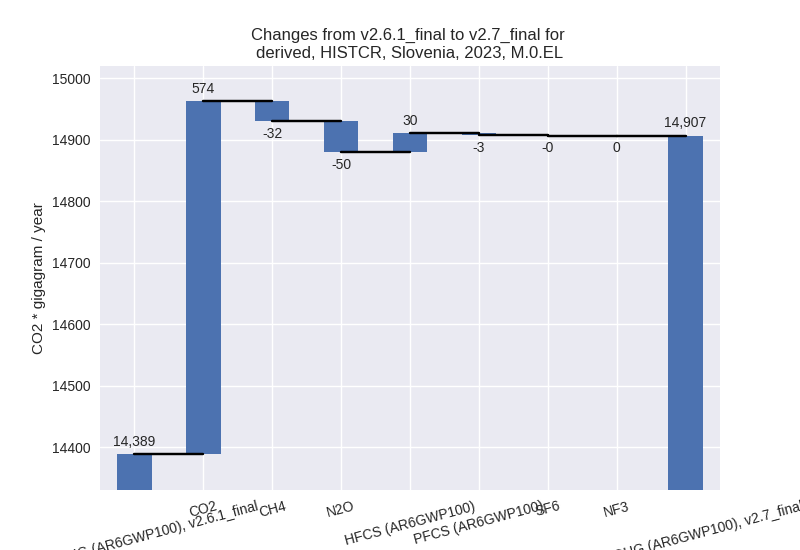
1990-2023
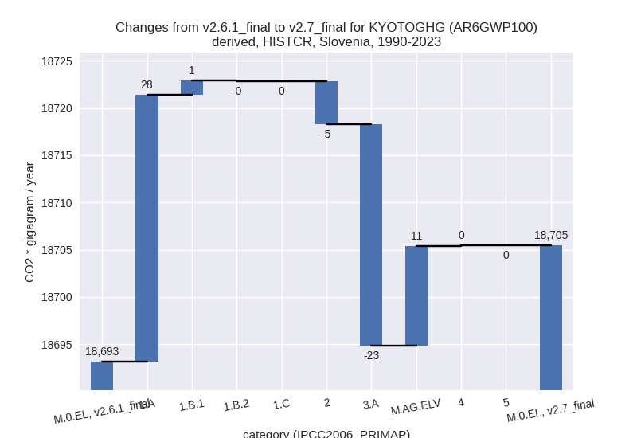
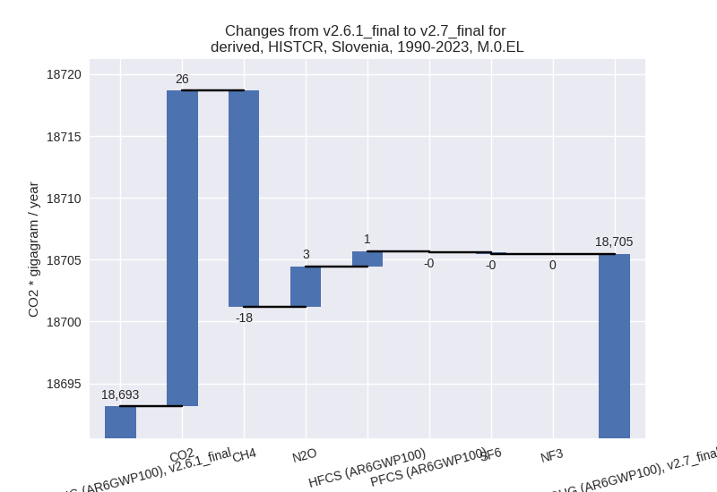
third party scenario
2023
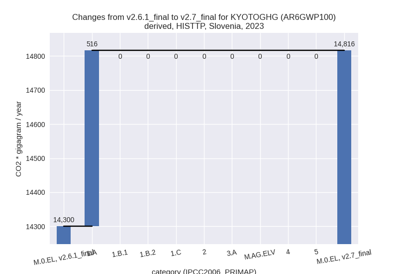
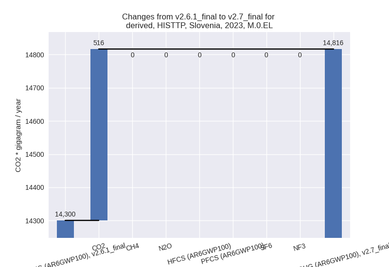
1990-2023
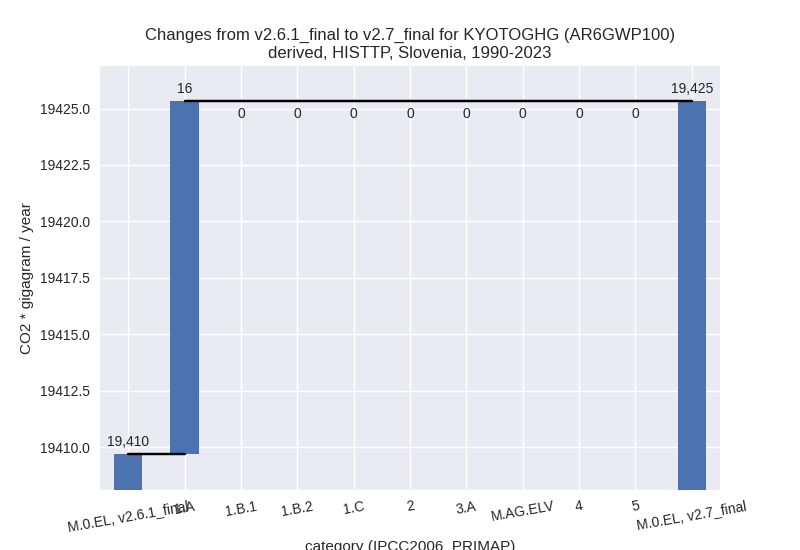
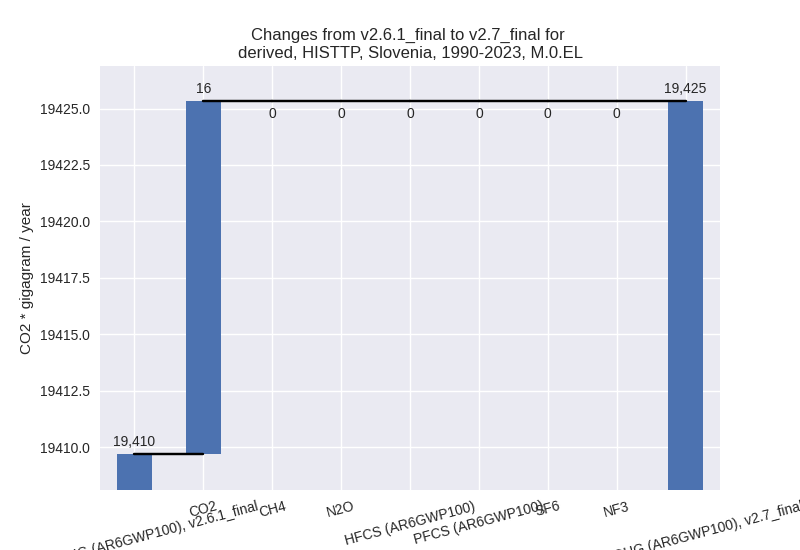
Detailed changes for the
scenarios:
country reported scenario
(HISTCR):
Most important changes
per time frame
For 2023 the following sector-gas combinations have
the highest absolute impact on national total KyotoGHG (AR6GWP100)
emissions in 2023 (top 5):
- 1: 1.A, CO2 with 634.17 Gg CO2 / year (6.0%)
- 2: 2, CO2 with -92.90 Gg CO2 / year (-12.7%)
- 3: 3.A, CH4 with -55.70 Gg CO2 / year (-4.6%)
- 4: 2, N2O with -46.84 Gg CO2 / year (-46.9%)
- 5: 1.B.1, CH4 with 30.98 Gg CO2 / year (18.8%)
For 1990-2023 the following sector-gas combinations
have the highest absolute impact on national total KyotoGHG (AR6GWP100)
emissions in 1990-2023 (top 5):
- 1: 1.A, CO2 with 27.32 Gg CO2 / year (0.2%)
- 2: 3.A, CH4 with -19.05 Gg CO2 / year (-1.5%)
- 3: M.AG.ELV, N2O with 10.33 Gg CO2 / year (2.4%)
- 4: 3.A, N2O with -4.39 Gg CO2 / year (-10.3%)
- 5: 2, N2O with -2.82 Gg CO2 / year (-7.9%)
Changes in the main sectors for aggregate KyotoGHG (AR6GWP100)
are
- 1: Total sectoral emissions in 2022 are 12425.12 Gg
CO2 / year which is 79.3% of M.0.EL emissions. 2023 Emissions have
changed by 6.1% (680.51 Gg CO2 /
year). 1990-2023 Emissions have changed by 0.2% (29.66 Gg CO2 / year). For 2023 the
changes per gas
are:
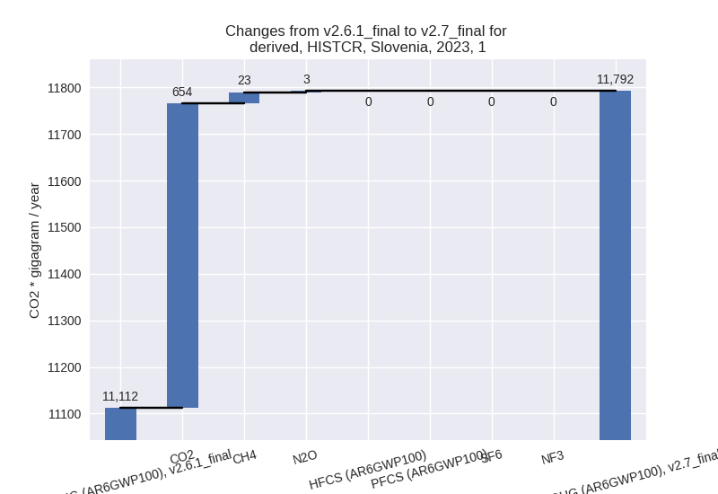
The changes come from the following subsectors:
- 1.A: Total sectoral emissions in 2022 are 12117.60
Gg CO2 / year which is 97.5% of category 1 emissions. 2023 Emissions
have changed by 5.8% (632.48 Gg CO2
/ year). 1990-2023 Emissions have changed by 0.2% (28.25 Gg CO2 / year). For 2023 the
changes per gas
are:
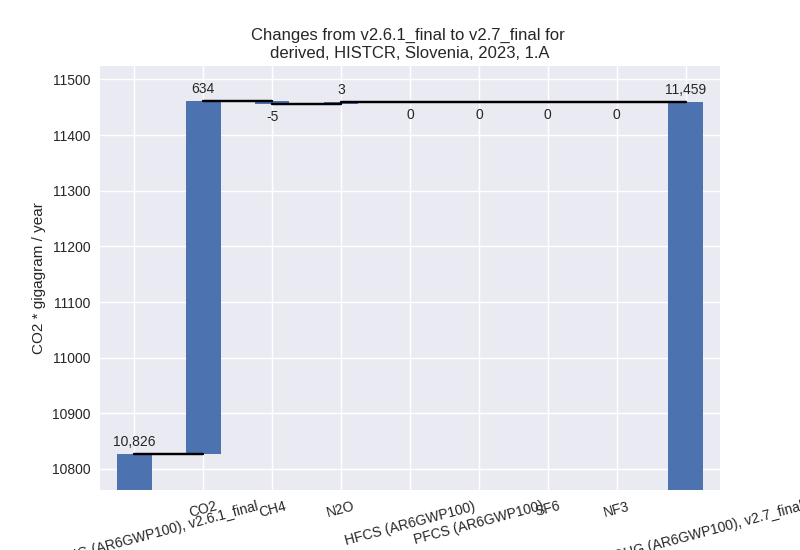
There is no subsector information available in PRIMAP-hist.
- 1.B.1: Total sectoral emissions in 2022 are 266.69
Gg CO2 / year which is 2.1% of category 1 emissions. 2023 Emissions have
changed by 20.8% (50.75 Gg CO2 /
year). 1990-2023 Emissions have changed by 0.3% (1.49 Gg CO2 / year). For 2023 the
changes per gas
are:
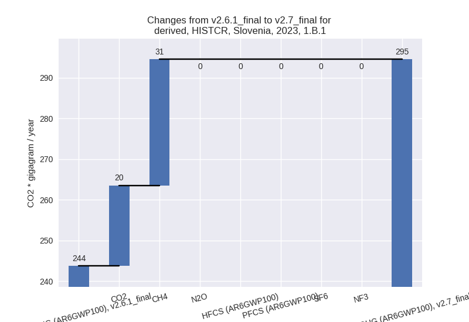
There is no subsector information available in PRIMAP-hist.
- 1.B.2: Total sectoral emissions in 2022 are 40.83
Gg CO2 / year which is 0.3% of category 1 emissions. 2023 Emissions have
changed by -6.5% (-2.72 Gg CO2 /
year). 1990-2023 Emissions have changed by -0.2% (-0.08 Gg CO2 / year). For 2023 the
changes per gas
are:
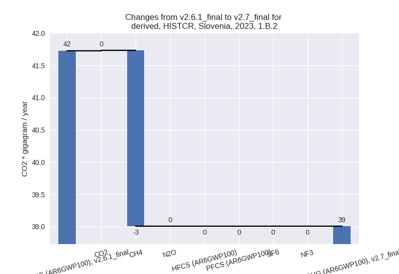
There is no subsector information available in PRIMAP-hist.
- 2: Total sectoral emissions in 2022 are 1151.22 Gg
CO2 / year which is 7.3% of M.0.EL emissions. 2023 Emissions have
changed by -9.7% (-113.60 Gg CO2 /
year). 1990-2023 Emissions have changed by -0.4% (-4.55 Gg CO2 / year). For 2023 the
changes per gas
are:
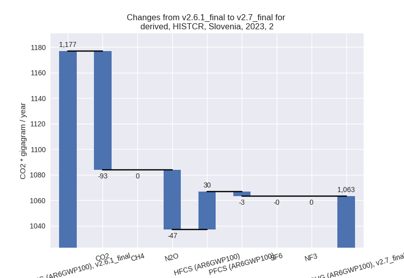
- M.AG: Total sectoral emissions in 2022 are 1669.20
Gg CO2 / year which is 10.7% of M.0.EL emissions. 2023 Emissions have
changed by -3.1% (-52.40 Gg CO2 /
year). 1990-2023 Emissions have changed by -0.7% (-12.88 Gg CO2 / year). For 2023 the
changes per gas
are:
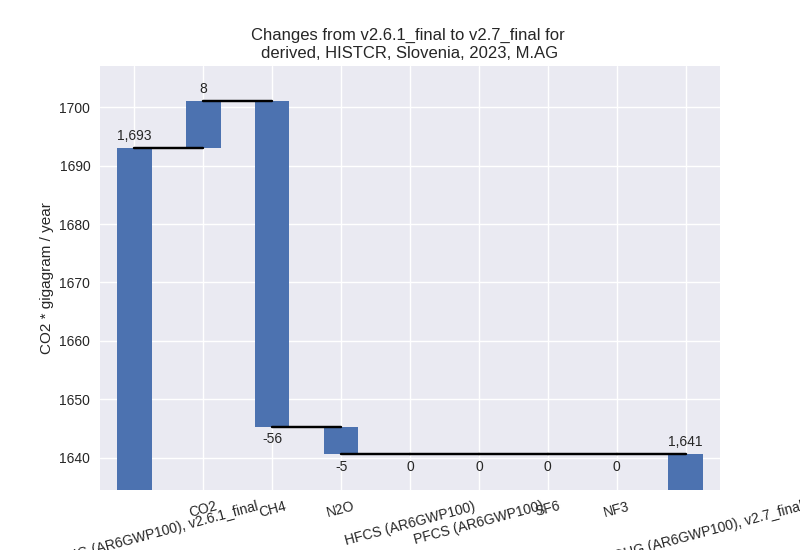
The changes come from the following subsectors:
- 3.A: Total sectoral emissions in 2022 are 1222.56
Gg CO2 / year which is 73.2% of category M.AG emissions. 2023 Emissions
have changed by -5.1% (-64.17 Gg CO2
/ year). 1990-2023 Emissions have changed by -1.8% (-23.45 Gg CO2 / year). For 2023 the
changes per gas
are:
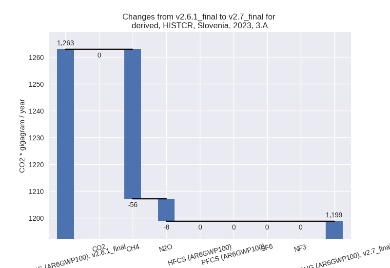
There is no subsector information available in PRIMAP-hist.
- M.AG.ELV: Total sectoral emissions in 2022 are
446.64 Gg CO2 / year which is 26.8% of category M.AG emissions. 2023
Emissions have changed by 2.7%
(11.77 Gg CO2 / year). 1990-2023 Emissions have changed by 2.3% (10.56 Gg CO2 / year). For 2023 the
changes per gas
are:
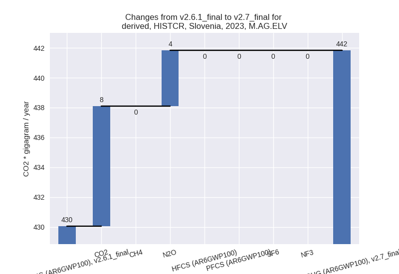
For 1990-2023 the changes per gas
are:
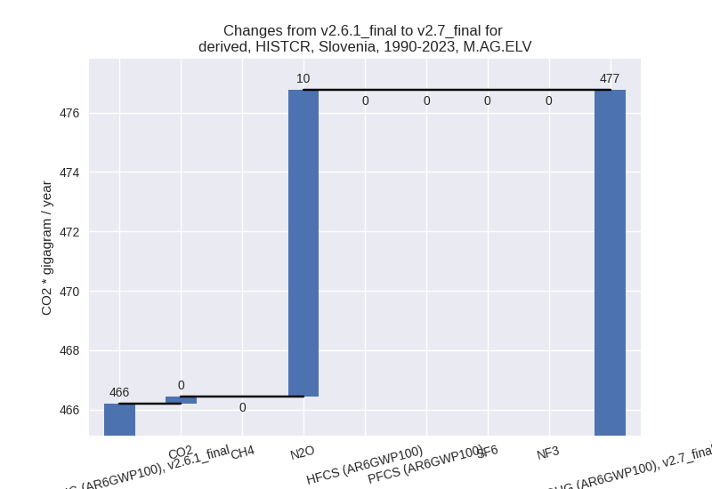
There is no subsector information available in PRIMAP-hist.
- 4: Total sectoral emissions in 2022 are 379.65 Gg
CO2 / year which is 2.4% of M.0.EL emissions. 2023 Emissions have
changed by 0.9% (3.40 Gg CO2 /
year). 1990-2023 Emissions have changed by 0.0% (0.08 Gg CO2 / year).
- 5: Total sectoral emissions in 2022 are 38.35 Gg
CO2 / year which is 0.2% of M.0.EL emissions. 2023 Emissions have
changed by 0.0% (0.00 Gg CO2 /
year). 1990-2023 Emissions have changed by 0.0% (0.00 Gg CO2 / year).
third party scenario (HISTTP):
Most important changes
per time frame
For 2023 the following sector-gas combinations have
the highest absolute impact on national total KyotoGHG (AR6GWP100)
emissions in 2023 (top 5):
- 1: 1.A, CO2 with 516.17 Gg CO2 / year (5.2%)
- 2: 1.A, CH4 with 0.00 Gg CO2 / year (0.0%)
- 3: M.AG.ELV, CO2 with 0.00 Gg CO2 / year (0.0%)
- 4: 2, PFCS (AR6GWP100) with 0.00 Gg CO2 / year (0.0%)
- 5: M.AG.ELV, N2O with 0.00 Gg CO2 / year (0.0%)
For 1990-2023 the following sector-gas combinations
have the highest absolute impact on national total KyotoGHG (AR6GWP100)
emissions in 1990-2023 (top 5):
- 1: 1.A, CO2 with 15.63 Gg CO2 / year (0.1%)
- 2: 1.A, CH4 with 0.00 Gg CO2 / year (0.0%)
- 3: M.AG.ELV, CO2 with 0.00 Gg CO2 / year (0.0%)
- 4: 2, PFCS (AR6GWP100) with 0.00 Gg CO2 / year (0.0%)
- 5: M.AG.ELV, N2O with 0.00 Gg CO2 / year (0.0%)
Changes in the main sectors for aggregate KyotoGHG (AR6GWP100)
are
- 1: Total sectoral emissions in 2022 are 12235.65 Gg
CO2 / year which is 78.4% of M.0.EL emissions. 2023 Emissions have
changed by 4.7% (516.17 Gg CO2 /
year). 1990-2023 Emissions have changed by 0.1% (15.63 Gg CO2 / year). For 2023 the
changes per gas
are:
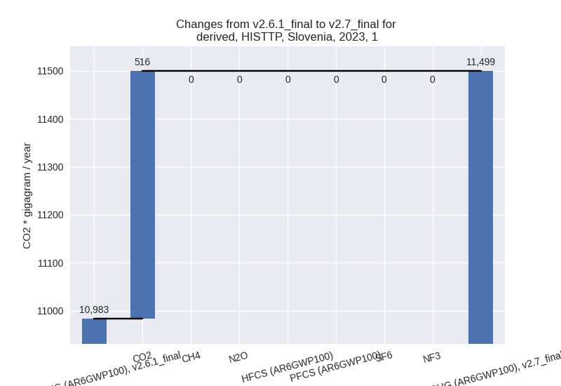
The changes come from the following subsectors:
- 1.A: Total sectoral emissions in 2022 are 11474.62
Gg CO2 / year which is 93.8% of category 1 emissions. 2023 Emissions
have changed by 5.0% (516.17 Gg CO2
/ year). 1990-2023 Emissions have changed by 0.1% (15.63 Gg CO2 / year). For 2023 the
changes per gas
are:
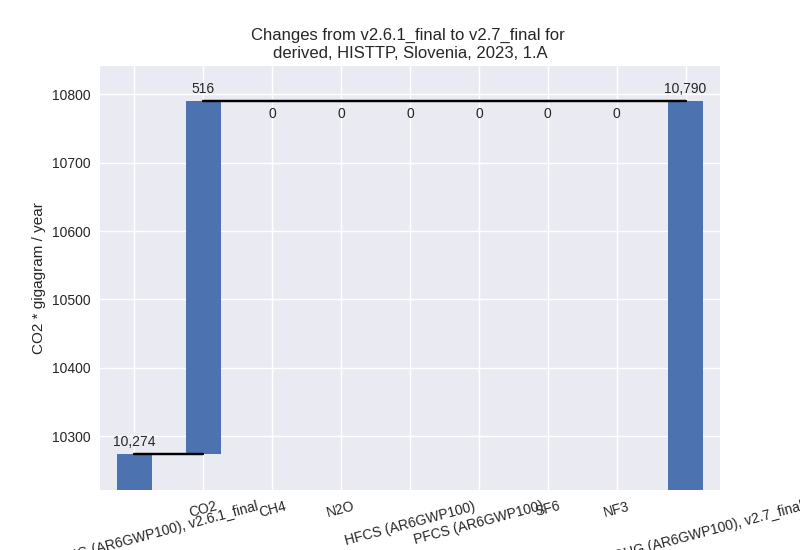
There is no subsector information available in PRIMAP-hist.
- 1.B.1: Total sectoral emissions in 2022 are 639.79
Gg CO2 / year which is 5.2% of category 1 emissions. 2023 Emissions have
changed by 0.0% (0.00 Gg CO2 /
year). 1990-2023 Emissions have changed by 0.0% (0.00 Gg CO2 / year).
- 1.B.2: Total sectoral emissions in 2022 are 121.24
Gg CO2 / year which is 1.0% of category 1 emissions. 2023 Emissions have
changed by 0.0% (0.00 Gg CO2 /
year). 1990-2023 Emissions have changed by 0.0% (0.00 Gg CO2 / year).
- 2: Total sectoral emissions in 2022 are 1252.69 Gg
CO2 / year which is 8.0% of M.0.EL emissions. 2023 Emissions have
changed by 0.0% (0.00 Gg CO2 /
year). 1990-2023 Emissions have changed by 0.0% (0.00 Gg CO2 / year).
- M.AG: Total sectoral emissions in 2022 are 1625.76
Gg CO2 / year which is 10.4% of M.0.EL emissions. 2023 Emissions have
changed by 0.0% (0.00 Gg CO2 /
year). 1990-2023 Emissions have changed by 0.0% (0.00 Gg CO2 / year).
- 4: Total sectoral emissions in 2022 are 459.56 Gg
CO2 / year which is 2.9% of M.0.EL emissions. 2023 Emissions have
changed by 0.0% (0.00 Gg CO2 /
year). 1990-2023 Emissions have changed by 0.0% (0.00 Gg CO2 / year).
- 5: Total sectoral emissions in 2022 are 38.35 Gg
CO2 / year which is 0.2% of M.0.EL emissions. 2023 Emissions have
changed by 0.0% (0.00 Gg CO2 /
year). 1990-2023 Emissions have changed by 0.0% (0.00 Gg CO2 / year).